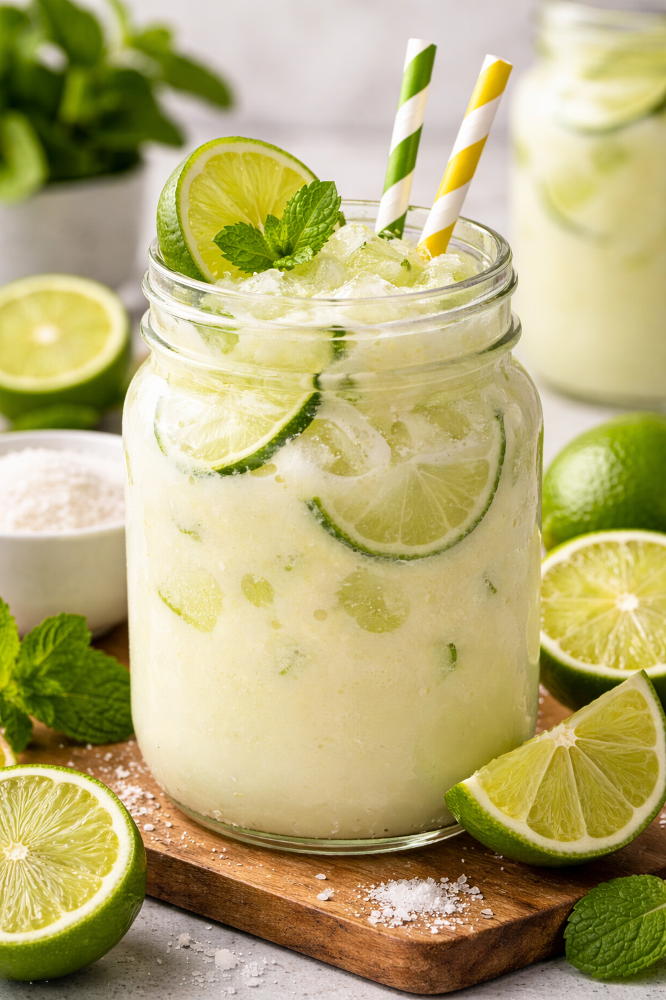

Home
Brazilian Lemonade

Description
This recipe is a must-have for the summer months when it's scorching hot.
Not only is this a refreshing drink, but it's one that begs people to have
another glass. It is a great party drink for lounging out by the pool, the
lake, or a family bbq.
Ingredients
- 8 juicy limes
- 2 tbsp sweetened condensed milk
- 4 quarts of water
Steps
- Cut the limes in half and juice them.
- Add the juice, water, and residual lime halves into a blender.
-
Use the pulse feature on the blender to achieve a cloudy concoction. You
should not have to pulse more than 8 times.
-
Strain the concoction and discard the strained pulp and lime halves.
- Return to strained liquid back into the blender.
- Add the condensed milk to the liquid.
- Blend the mixture until incorporated.
-
Serve in a glass with ice. Serve with a lime wedge for garnish.
(Optional)
- Enjoy!